付款申請單＋請款 · 操作手冊
專案目的： 協助團隊掌握璽墨與 ACC 之間標案同步、付款申請核銷及標案請款入帳的完整操作流程。
本手冊分三塊：
1. 璽墨及 ACC 介面同步說明（說明 1～2）
2. 付款申請單流程（步驟 1～5）
3. 標案請款流程（步驟 1～9）
一、璽墨及 ACC 介面同步說明
1說明 1
在璽墨的介面新增標案後，ACC 的介面就會同步出現該標案
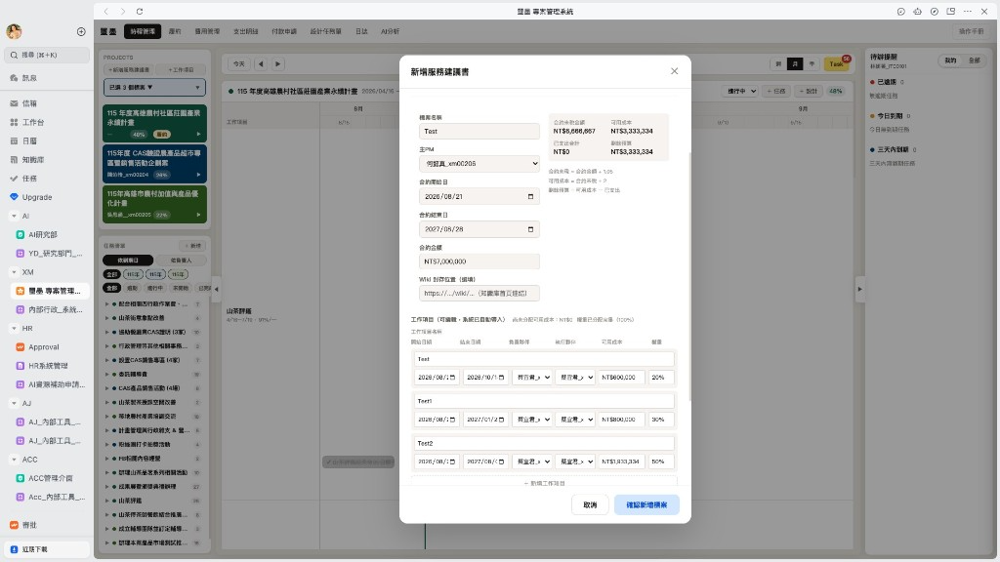
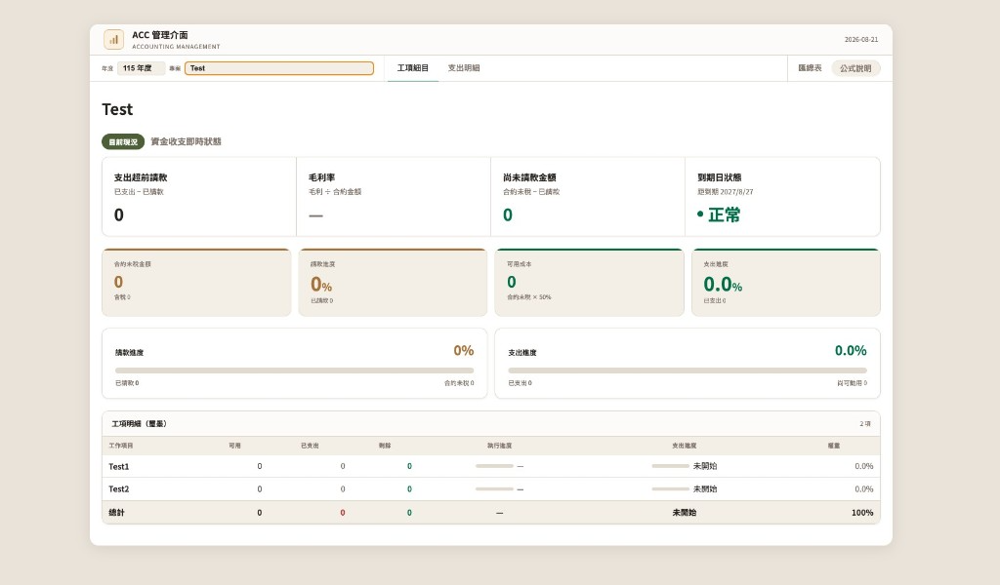
2說明 2
璽墨的任務進度％數會同步顯示在 ACC 的工項列表
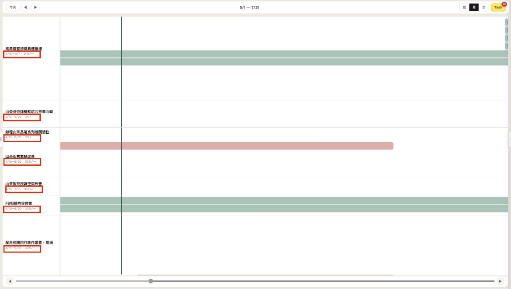
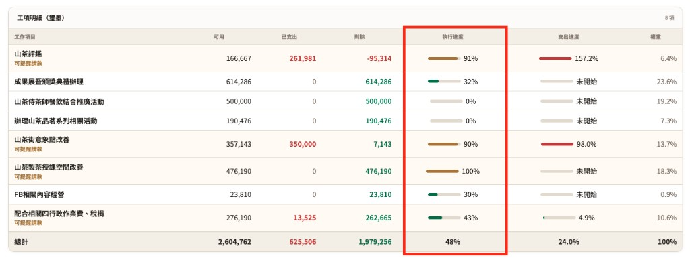
二、付款申請單流程
1步驟 1
填寫付款申請單
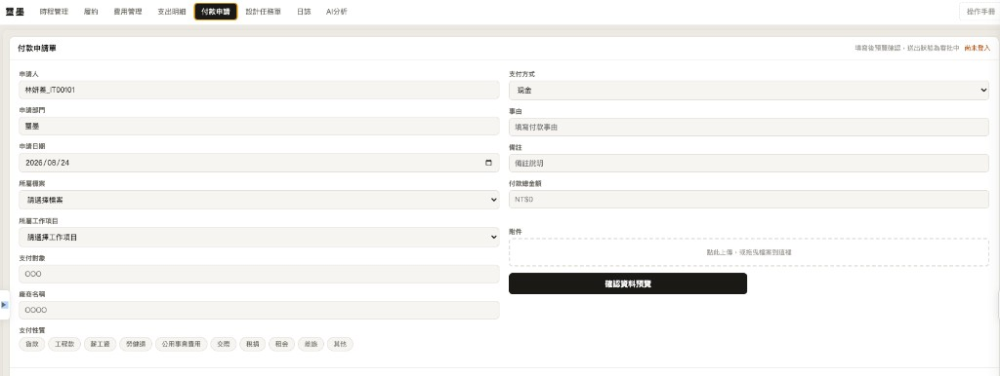
2步驟 2
填寫完畢的付款申請單會出現在下方的「已送出的付款申請」
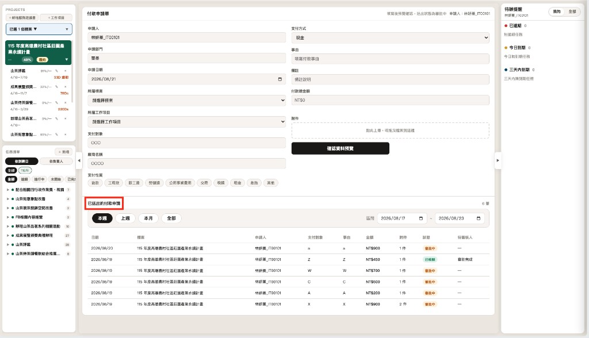
3步驟 3
點擊審批進入審核中心，可以看到此付款申請單的細項以及要簽核的人，簽核到最後一個人即結束
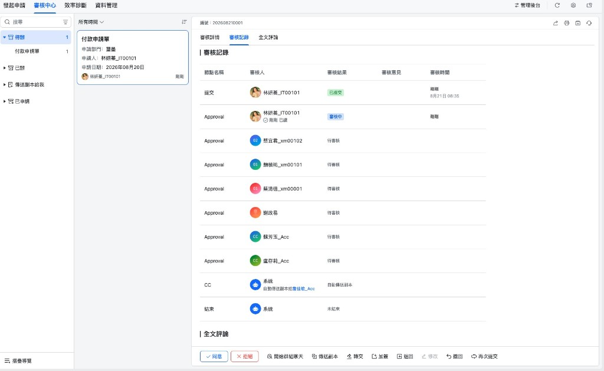
4步驟 4
當此審批已經通過的時候，「已送出的付款申請」的狀態就會顯示「已核銷」，並出現在璽墨的支出明細頁面內及費用管理頁面
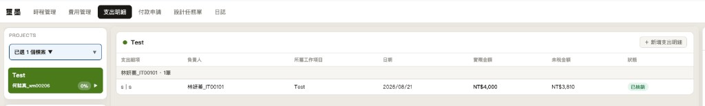
5步驟 5
當此審批「已核銷」時，就會出現在 ACC 的管理介面
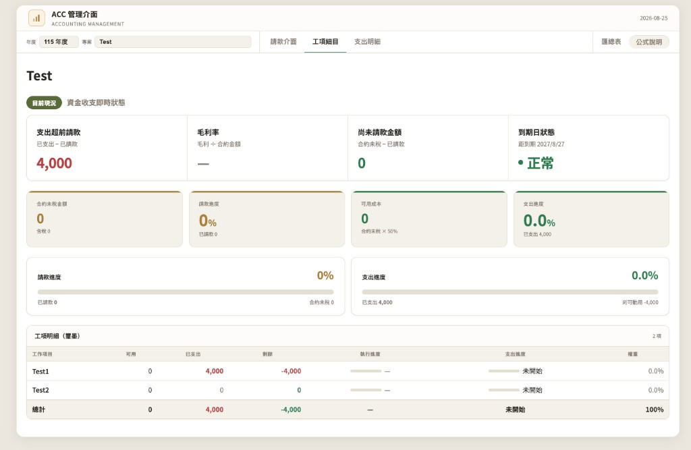
三、標案請款流程
1步驟 1
打開璽墨專案介面並選擇履約頁面後點擊新增請款，填寫資訊後儲存
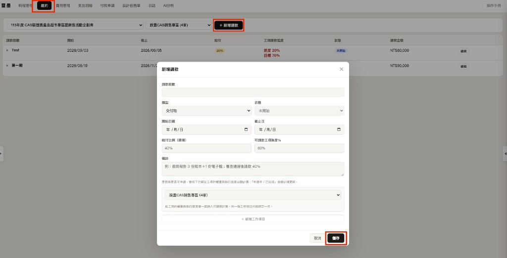
2步驟 2
進度達標為綠色且狀態為可申請，並由 Lark 通知主 PM；進度未達標為紅色且狀態為未開始
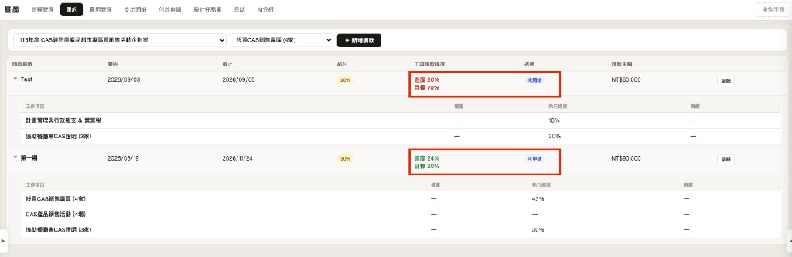
3步驟 3
（此步驟非系統操作）
收到 Lark 可申請通知後手開發票並傳 LINE 給會計
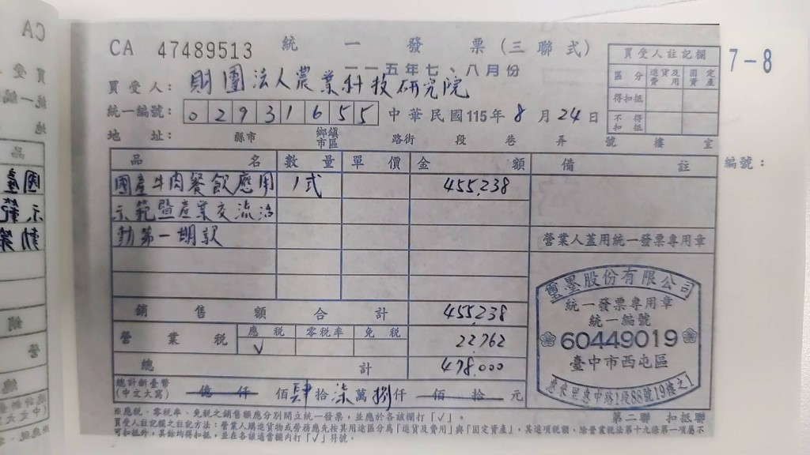
4步驟 4
會計送出此請款時請進入 ACC 介面，選擇該專案後即會出現此請款資訊並點擊「改申請中」
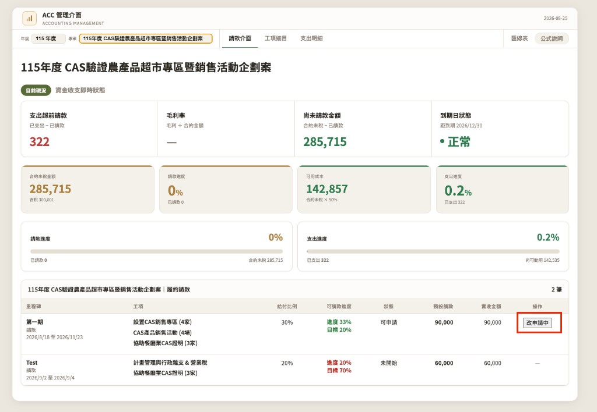
5步驟 5
履約頁面的請款資訊即同步為「申請中」
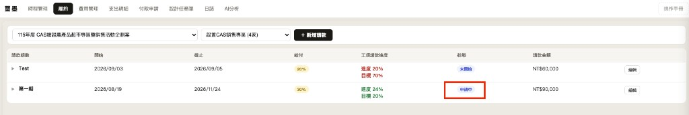
6步驟 6
會計確認入帳後請到 ACC 介面點擊「完成入帳」（金額可手動更改）
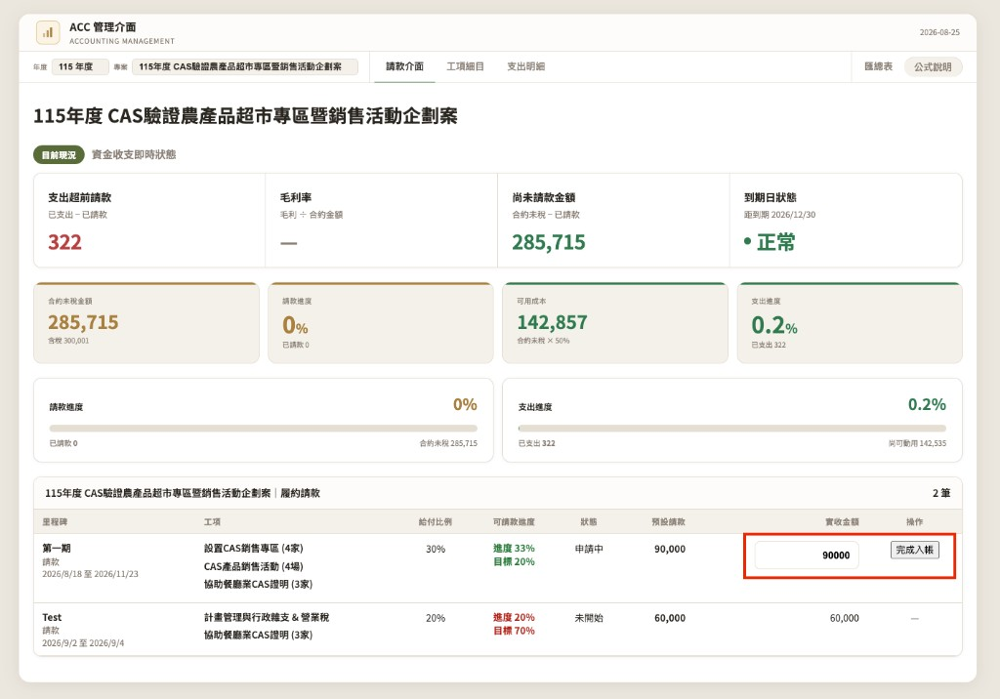
7步驟 7
入帳完成後即刻顯示在 ACC 介面上
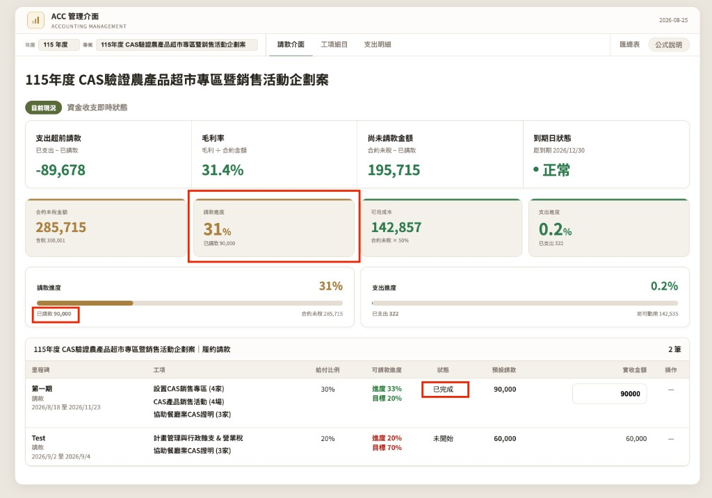
8步驟 8
入帳完成後璽墨履約請款狀態為「已完成」
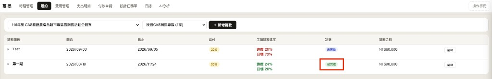
9步驟 9
入帳完成後璽墨費用管理同步此專案的入帳金額
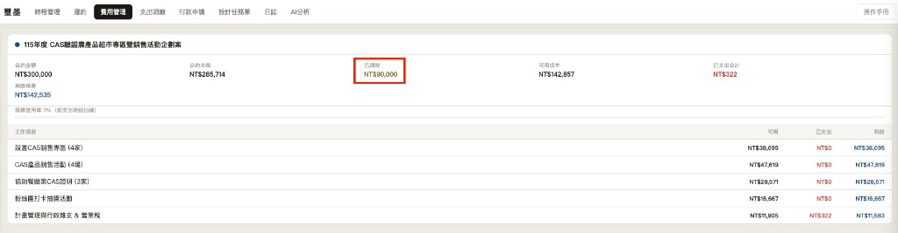